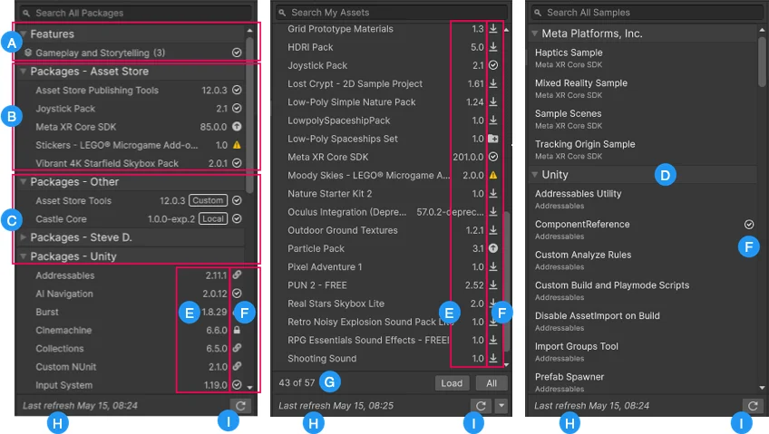
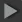
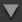
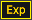
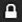
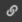
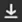
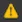
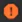
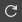

The Package Manager window displays the list of feature sets, packages, samples, or Asset Store packages that meet your criteria.
You set the criteria by selecting a context in the navigation panel, and by optionally setting additional filter and search criteria.
For important information about the way search works, refer to Search box.

(A) Toggle the expander icon (

) to expand or collapse (
) the list of feature setsA feature set is a collection of related packages that you can use to achieve specific results in the Unity Editor. You can manage feature sets directly in Unity’s Package Manager. More info(B) Expand Packages - Asset Store in the All Packages view to list packages you added to your project from the My Assets list.
(C) Expand the various Packages groups to view the lists of registry packages installed in your project or available for installation. The list has separate groups for packages that come from Unity’s registry and other scoped registries you installed in your project. Select the expander on the left to expand () or collapse () the list of packages for each registry.
(D) View all available samples from the packages installed in your project, not just the ones you imported. The Package Manager window groups the list by author and sorts each group by parent package name, then sample name.
(E) View the installed or imported version of the package. If the package isn’t installed or imported yet, the listed version varies by package format:
.unitypackage format), the list view displays the latest of version of the package, unless you downloaded the package but didn’t import it, in which case the downloaded version displays.The following labels appear beside the version number for packages whose state isn’t Released:

ExperimentalFor packages from the Asset Store, the version that appears is either the version you already downloaded or the version that’s available for download from the Asset Store.
(F) These icons display the status of the package:
| Icon | Description |
|---|---|
| A check mark indicates that the package, feature set, or sample is already installed, enabled, or imported. | |
| The update icon indicates that the package has an available update. To update your package, follow the appropriate instructions based on the package type: - For Unity Package Manager (UPM) packages, refer to Switch to another version of a UPM package. - For asset packages, refer to Update an asset package. - You can’t update feature set versions because they’re fixed to the Editor version. |
|
 |
The lock icon indicates a package that’s installed as part of a feature set. |
 |
The link icon indicates a package that’s installed as a dependency. |
| The import icon indicates that there’s an asset package available to import. | |
 |
The download icon indicates that there’s an asset package available to download. |
 |
A warning icon indicates an issue with the package, such as lifecycle deprecation. |
 |
An error icon indicates package version deprecation or an issue that occurred during installation or loading. For information about resolving errors, refer to Package Manager troubleshooting. |
(G) The My Assets context displays a counter showing the number of packages from the Asset Store that are available but not shown in the list. To load more packages from the Asset Store, click the Load link.
Note: If you select the My Assets context but the Package Manager window doesn’t list any packages, refer to Error messages in the Package Manager window for an explanation and solution.
(H) View the status bar for messages about the package load status and network warnings.
(I) Click the reload

button to force the Package Manager window to reload your packages, feature sets, and samples.By default, the Package Manager window displays the list of all packages, feature sets, and samples available in the selected context. However, you can filter the list to display packages, feature sets, and samples that meet your criteria.
You can also include pre-release packages in the list and search for a specific package or feature set by name (ID) or display name.